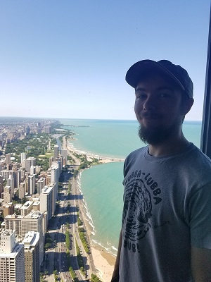

About Me

I actually lucked into the school, my Dad just married my Mother-in-Law and her son just graduated the school the year I was transitioning to my freshman year. So the choice they made was I was to go to the better school. I hated the idea when I found out, it was sprung on me when my Dad drove me to the campus and surprised me with an entrance exam. I didn't want to go to the school because I wanted to be with my friends, so I bombed the test intentionally. I didn't really have to, I hadn't a clue what the material was. Come to find out, I passed with one mark over the condition to be accepted, so really I just guessed well enough to change my life. While there I resented it and just avoided anybody and anything. It was my 4th week I had a change of heart and decided I wanted to make the most of it. I was in the lowest level of classes, with classmates only focused on physical sports. I dug deep, and found out how to work extremely hard. I went from 'level 9' to 'level 2' classes by my senior year, learned Chinese, mastered Pre-calculus and was President of the Computer Technology club for 3 years. Today, I don't have a college degree, but I have the respect and deep friendships of many of who do. Even individuals who don't have college degrees themselves, but have Harvard graduates working for them, I can claim as my equal. I knew I made the right choice for myself when life connected me with who I know and love today. I would have never met them, or been challenged the same way if I erroded my psyche and self esteem in University. I feel satisfied with my choices, and feel rejuvenated with a new but familiar drive to become something even greater.